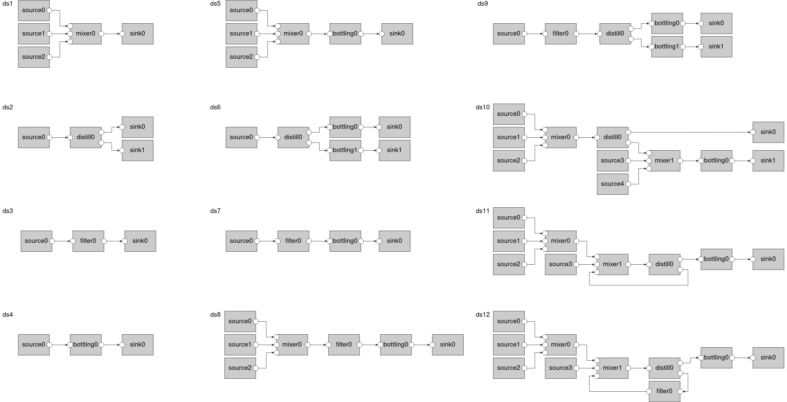

BeRfiPl - Benchmark for Diagnosis, Reconfiguration & Planning¶
This is the documentation for the Benchmark for Diagnosis, Reconfiguration & Planning (BeRfiPl). The benchmark is a simulation of a modular Cyber-Physical process plant created in OpenModelica. The simulation allows the generation of comprehensive datasets of Cyber-Physical Systems for the training, testing and evaluation of Machine Learning approaches from the domains of diagnosis, reconfiguration and planning.
BeRfiPl simulation environment can be used to create BeRfiPl benchmark datasets, and furthermore custom datasets with custom parameters of custom Cyber-Physical Process Plants. All datasets include hybrid data, various faults, varying system complexities, complex dependencies, and recurring functionality calls. For further information read and cite:
@inproceedings{ehrhardt2022,
title={An AI benchmark for Diagnosis, Reconfiguration, and Planning},
author={Ehrhardt, Jonas; Ramonat, Malte; Heesch, René; Balzereit, Kaja; Diedrich, Alexander; Niggemann, Oliver},
conference={IEEE - 27th conference on emerging technologies and factory automation - ETFA 2022, Stuttgart},
year={2022},
}
Simulation¶
The simulation models are modelled and OpenModelica and accessible for manipulation and the creation of custom datasets.

Benchmark¶
Additionally, BeRfiPl benchmark can be created to test own AI approaches on diagnosis, reconfiguration and planning on a standardized set of datasets. The benchmark consists of twelve datasets derived from twelve distinct Cyber-Physical Process Plants Configurations (cf. Fig. 1). The configurations include different, increasing complexity scenarios, as well as recurrent functionality calls, and data from hybrid systems.
{kind=link}
Fig. 1.: Setup of the Cyber-Physical Process Plants creating the benchmark datasets.
Contact¶
For questions you can contact jonas.ehrhardt(at)hsu-hh.de or malte.ramonat(at)hsu-hh.de.